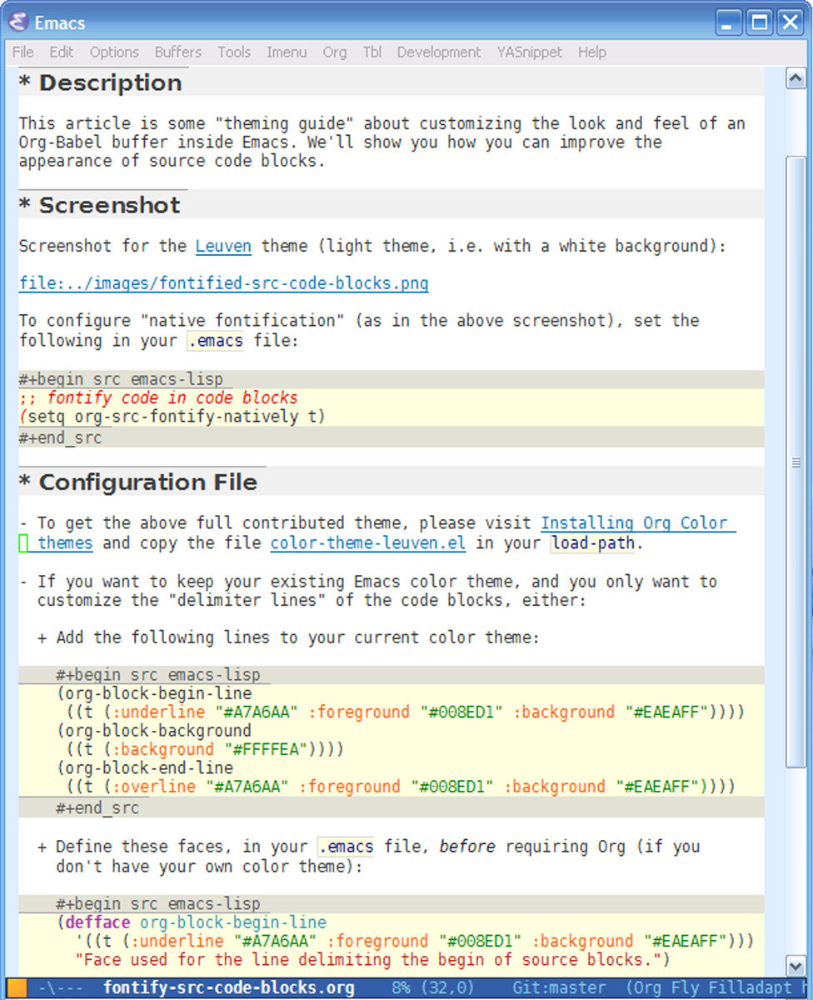

This project is DEPRECATED
Table of Contents
1 Color-theme-leuven
Looking for an awesome Emacs color theme? Here's the place to find one!
Welcome to the Leuven color theme, an elegant theme for light backgrounds, with built-in style for many components such as Org-mode, Gnus, Dired+ and EDiff. Make it yours!
Tweet1.1 Screenshots
Fontified source code blocks:

1.2 Download
Get the full Git repository at https://github.com/fniessen/color-theme-leuven using the following command:
git clone git://github.com/fniessen/color-theme-leuven.git
1.3 Installation
- Download color-theme.
-
Install it, by adding this to your Emacs init file (usually
~/.emacs):(add-to-list 'load-path "/path/to/color-theme-6.6.0") (require 'color-theme)
-
Download and install color-theme-leuven:
(add-to-list 'load-path "/path/to/color-theme-leuven") (require 'color-theme-leuven)
- Restart Emacs.
1.4 License
Copyright (C) 2003-2013 Fabrice Niessen